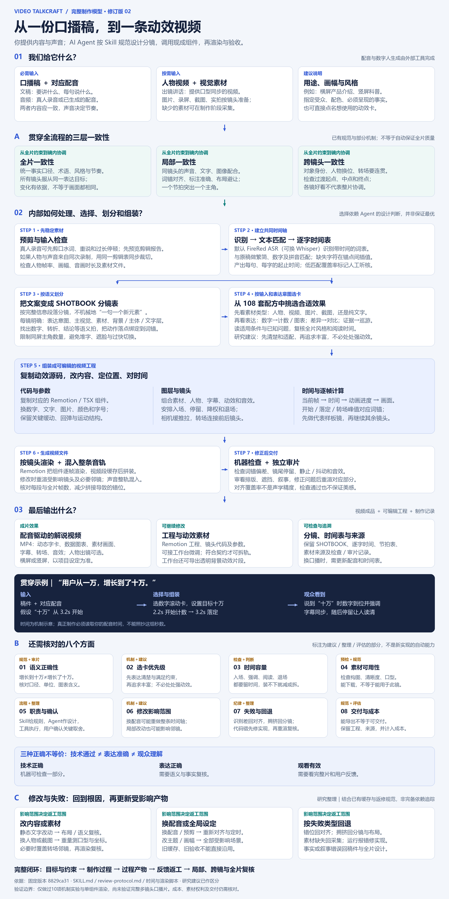

全片一致性
整条片子是否遵循同一目标与表达规则？
统一受众、事实口径、术语、主题色、字阶、图表和运动语言。允许有目的的变化，不要求所有镜头相同。
同一个十万，不能上一镜指注册用户、下一镜无说明地变成活跃用户。
已有规范＋共享配置；语义仍需审片CAPABILITY STUDY · 2026.09.16 · 修订 03
Video TalkCraft 是一套口播视频制作 Skill：Agent 理解文案并设计分镜，脚本对齐声音时间，动画组件负责画面，Remotion 输出视频与工程。

把上游仓库链接交给支持 Skill 的 Agent 安装。这份研究快照不包含完整安装所需的全部文件。
上游安装说明 ↗确定受众、表达目标、画幅与风格，提供一致的稿件和成品配音。需要人物时提供同步视频，并准备或采集真实截图、图片和实拍。
Agent 生成时间表、分镜与选卡理由，按素材、时长和全片风格筛选效果。先检查一个镜头的表达与听感，再展开全片。
核对事实、声画同步、阅读时间与跨镜衔接；交付成片、可编辑工程、来源及检查记录。改配音时重新判断整条时间轴的影响。
用 video-talkcraft 制作一条约 30 秒的产品功能讲解。 受众是首次使用的同事，目标是让他们理解一个功能解决什么问题。 口播稿为 script.txt，成品配音为 voiceover.wav，真实产品截图在 assets/。 横屏 16:9，本次不需要人物出镜，保持统一字体、主题色和数据口径。 先检查稿音一致性和素材，再给出分镜、词锚与选卡理由。 优先表达清楚、阅读来得及；先交付一镜有声样板供确认，再完成全片。 最终交付视频、Remotion 工程、素材来源与检查记录；缺失项单独说明。
在已安装 Skill 的环境中使用，并替换为自己的素材路径。
只有文案时，先录音或通过外部工具准备配音。本库不自带 TTS 或数字人生成模型；选卡由 Agent 结合条件判断，不保证自动选出最优效果。圆形人物窗可保留背景，轮廓贴角需要抠像。此网页展示研究与案例，不提供上传生成服务。
原作者演示已保存在本地。点击画面播放；示例内容不是你的口播成片，人物可能是演示占位。
输入是口播稿与成品配音。Agent 按规则设计镜头，语音识别提供时间锚点，Remotion 把动画组件渲染成视频。人物视频与素材按呈现需求准备。
例句为“用户从一万增长到十万”。这里使用实验中的人工词表：“十”从 2.90 秒开始，计数动画在这一刻到达十万。
试着把画面延后 0.30 秒：文字时间不动，数字落定变晚。节拍检查能发现这类相对偏移。
“字级”是输出粒度。汉字多用识别锚点；识别错漏、英文词及词内字符可能使用插值。它不是每个字都经过独立声学定位。
各镜头分别好看，不代表整片协调。一致性允许有目的的变化，但变化须服务同一表达目标。
整条片子是否遵循同一目标与表达规则？
统一受众、事实口径、术语、主题色、字阶、图表和运动语言。允许有目的的变化，不要求所有镜头相同。
同一个十万，不能上一镜指注册用户、下一镜无说明地变成活跃用户。
已有规范＋共享配置；语义仍需审片这一镜的声、画、字、动作是否互相配合？
一个节拍突出一个主角；词锚、数字、字幕、音效协调；标注圈对目标，布局不遮脸、不相撞。
旁白说十万时数字落定；标注与截图中的目标一起移动。
已有规范＋部分机器检查从上一镜到下一镜是否保持连续和可理解？
对象身份、人物位置变化、相机语言与转场峰值保持连续；检查过渡全过程，而不只检查两端静帧。
人物缩成角标时，字幕应等其换位结束再调整，不能在中途穿过人脸。
已有跨幕评审与过渡检查规范视频能播、帧数吻合、相对词锚无明显错位。
机器可检查一部分。声、画、字忠实表达同一事实，没有概念或数据误导。
需要语义与事实复核。观众来得及读清，理解重点与前后关系。
需要看完整片和用户反馈。声画同步但把“增长到十万”写成“增长了十万”，仍是表达错误。事实正确但来不及读清，也不代表观看有效。
仓库已有机制与规范来自固定版本源码；研究建议是本项目的补充理解，不是新增自动化能力。尚未用完整多镜头口播片验证。
画面是否忠实于口播及事实？
核对术语、单位、数据口径和图表比例。增长到十万不等于增长了十万；声画对齐也不能代替事实核验。
已有事实清单与审片规范；非自动事实保证多个效果都能用，先取舍什么？
先满足事实与表达目标，再按素材可用性、画幅、时间容量和全片风格筛选，最后追求视觉丰富度。信息已经清楚时可降低动效强度。
输入类型筛选已存在；完整优先级为研究建议这一段是否装得下动画与阅读时间？
核对入场、强调、停留、退场与配音时长。空间拥挤或阅读来不及，应减少内容、拆镜或调整稿件，不能只加速动画。
已有镜尾保护与排版预算；阅读效果需判断找到的素材是否真的适合这个镜头？
检查分辨率、构图、真实性、人物口型、帧率和抠像边缘；缺素材时改方案或记录未完成，不能用示意图冒充真实证据。
已有素材预检与真图规范谁理解、谁执行、谁批准表达方向？
Skill 提供规范；Agent 理解、分镜、选卡和实现；模型及脚本处理时间与渲染；用户确认需求、样板镜和重要取舍。
已有样板镜确认；职责分层为研究整理哪些产物因这次修改而失效？
改静态文字与换整条配音的影响不同。沿素材→时间表→分镜→组件→渲染→验收传播变更，不能默认只重渲编辑过的那一镜。
已有邻镜重渲、缓存指纹；非完整依赖追踪错误应该回到制作的哪一步？
词锚差回到音频与对齐；素材缺失回采集；拥挤回分镜布局；运行报错先修实现；语义错误回事实与稿件，再更新受影响产物。
已有闸门与返修纪律；统一回退表为研究整理何时算完成，是否值得采用？
既核对可播放，也核对表达和可读性；交付成片、工程、来源与遗留问题。计入Agent、模型、渲染、素材与授权成本。
已有交付与许可说明；成本收益需按项目评估下表是复核指南；现有邻镜缓存与音轨指纹不等于完整自动依赖追踪。
| 修改 | 影响范围 | 返回路径 |
|---|---|---|
| 改局部标题或数字样式，口播不变 | 重查排版、语义及本镜；影响转场交叠时覆盖邻镜。 | 组件／布局 → 相关镜头渲染 → 局部与衔接复核 |
| 改稿、换配音或重新预剪 | 重新对齐；检查句界、词锚、镜头边界、字幕、动效与整条混音。未必局限在一镜。 | 音频／对齐 → 分镜时序 → 全部受影响产物 |
| 换人物、图片或网页截图 | 重新量测画幅、人脸与标注坐标；换人物还需核对口型和时长。 | 素材预检 → 布局／标注 → 渲染与复核 |
| 改全片风格、画幅或公共组件 | 复核所有受影响镜头的字体、几何、相机、字幕及过渡，旧验收不能直接沿用。 | 全局配置 → 受影响场景 → 全片一致性复核 |
检查稿音一致性与预剪结果，重做对齐并听核；不靠挪动画掩盖根因。
回采集／坐标量测／分镜，替换素材或减少信息；记录仍未完成的部分。
先修素材路径、组件实现或运行环境，再重渲并核验，避免重复无效渲染。
回到事实、稿件和全片设计，更新受影响声音、时间与画面，再审片。
完整模型：目标与约束 → 制作过程 → 过程产物 → 反馈与返工。修改后更新受影响产物，再做局部、跨镜与全片复核。
沿主流程阅读，再看贯穿约束和返工路径。点击图片可查看高清版本。
字幕、数字、强调和音效引用同一组词锚，减少分别调整造成的偏移。上游时间戳错误也会传递到整个画面，需要抽听复核。
配方把意图、参数、代码与常见问题放在一起。内容和风格可以改，关键运动结构可以保留；素材更换后仍需检查布局。
视频按镜头分段缓存，改一镜可只重渲受影响片段。整条声音最后统一混入；收益受镜头交叠、素材和机器性能影响。
节拍偏移、镜尾停留不足、素材缺失等可由脚本阻止进入交付。美感、信息准确性与叙事是否有效，仍需要独立评审。
| 需求 | 适配程度 | 需要补齐什么 |
|---|---|---|
| 科普、产品介绍、观点解说 | 适合：以口播为主，画面负责解释和强调。 | 准确稿件、清晰配音与有信息量的素材。 |
| 带出镜人物的解说 | 适合合成与排版，可用圆窗或透明人物。 | 与声音同步的人物视频；轮廓贴角需抠像。 |
| 品牌系列内容 | 有复用价值：统一颜色、字阶和动效语言。 | 固定风格规范；商用前核对上游授权。 |
| 文案直接变配音或数字人 | 不在库内能力范围。 | 另外的 TTS 或数字人生成工具。 |
| 电影实拍感的全新场景生成 | 不是它的核心能力。 | 拍摄、素材库或视频生成工具提供画面。 |
| 任意 MP4 自动拆回图层 | 不支持这种逆向还原。 | 工作台拆解依赖特定 Remotion 工程契约。 |
固定版本的上游原始脚本，用人工构造的识别词表验证逻辑。没有运行 FireRed / Whisper 模型，因此这些实验不代表真实录音精度。
“TalkCraft”完全不在模拟识别词表中，仍通过两侧中文锚点补齐时间。中文锚点覆盖率为 100%，并不代表英文时间已经被精确识别。
把所有输入时间统一推后 2 秒，match 仍是 100%。它衡量文本锚点覆盖，不能独立发现整条时间轴错位。
正确词锚通过；动画晚 0.30 秒被拒绝；距镜尾只剩 0.20 秒也被拒绝。通过检查仍不等于完整成片已通过审片。
使用同一版本的 number-counter.tsx，保留原始参数，直接渲染 86 帧。灰色人物轮廓是模板占位，没有生成数字人；该测试片无配音。
| 实验 | 结果 | 观察 |
|---|
尚未验证：真实配音的识别误差、完整长片制作、全片音效混音、工作台工程拆解、人物抠像质量。作者的速度与精度数据属于特定样本实测，不作为本机性能承诺。
六个代表案例已保存到本地。其余动效通过原作者在线演示与固定版本源码查看；在线页面可能随上游更新。
研究版本：8829ca31fb8aeb1b850e85e47a7d7584c349bc4a。本页是独立能力研究，不是作者提供的视频生成服务。
上游采用 PolyForm Noncommercial 1.0.0，作者声明商业使用工具需要事先授权。原作代码与演示的许可保持不变；Remotion、音效及素材各有其使用条款。
{kind=link}